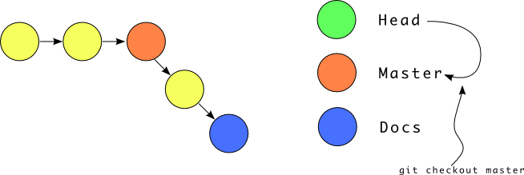

Version control systems
Distributed version control
- Version control without a central server.
- Each checkout is a full first class reposistory.
- Most operations (commit, log, diff) are local.
- Just a few non-local commands to publish your changes.
- e.g. Bzr, Git, Mercurial etc.
Git
- Bitkeeper replacement
- Content addressable file system
- Cryptographically signed commits (SHA1)
- Heavy branching/merging support
- UNIXy (plumbing + porcelain)
- Highly distributed workflows
Getting set up
sudo apt-get install git-coreon Ubuntu/Debian- Source :
http://kernel.org/pub/software/scm/git/git-1.7.3.5.tar.bz2. - Set things in your config file
/etc/gitconfig,~/.gitconfig,.git/config.
Configuration
$ git config --global user.name "Noufal Ibrahim"
$ git config --global user.email noufal@nibrahim.net.in
Your first repository
$ git init # Initialise a repository
Initialized empty Git repository in /tmp/foo/.git/
$ echo "This is a sample repository" > README
$ git status # Show status of files
# On branch master
#
# Initial commit
#
# Untracked files:
# (use "git add <file>..." to include in what will be committed)
#
# README
nothing added to commit but untracked files present (use "git add" to track)
Committing a file
$ git add README
$ git status
# On branch master
#
# Initial commit
#
# Changes to be committed:
# (use "git rm --cached <file>..." to unstage)
#
# new file: README
#
$ git commit -m "Initial commit"
[master (root-commit) 199455a] Initial commit
1 files changed, 1 insertions(+), 0 deletions(-)
create mode 100644 README
Viewing history
$ git log # Full logs
commit 199455a2525a0a2fd712a7fe7e97c1e4efe87e18
Author: Noufal Ibrahim <noufal@nibrahim.net.in>
Date: Tue Jan 18 00:50:47 2011 +0530
Initial commit
$ git log --pretty=oneline # Formatting
199455a2525a0a2fd712a7fe7e97c1e4efe87e18 Initial commit
Making changes
$ echo "\nOne more line\n">> README
$ git diff
diff --git a/README b/README
index 0ece930..c43f21d 100644
--- a/README
+++ b/README
@@ -1 +1,4 @@
This is a sample repository
+
+One more line
+
$ git status
# On branch master
# Changed but not updated:
# (use "git add <file>..." to update what will be committed)
# (use "git checkout -- <file>..." to discard changes in working directory)
#
# modified: README
#
no changes added to commit (use "git add" and/or "git commit -a")
$ git add README
$ git commit -m "Added one more line"
[master 0d47197] Added one more line
1 files changed, 3 insertions(+), 0 deletions(-)
Workflow stages
The working copy
- Your files which you actually edit.
- Files are moved into the index/staging area using
git add.
The staging area
- You can fine tune your patch before committing it.
git add -iallows you to add pieces of changes.git diffshows only unstaged diffs.git diff --cachedshows staged diffs.
The repository
- This is your database of commits, branches, tags etc.
- We'll cover it in detail in a later slide.
- All commands operate on this.
- Present inside the
.gitdirectory (orGIT_DIR).
The remote(s)
- Represent other repositories.
- You can send sync with these.
- Used to publish/collaborate.
- e.g. The copy of your repository on github.
Snapshot storage
Image from : http://www.slideshare.net/chacon/getting-git
Objects in git
- Each object is a identified by a 40 characters SHA1 hash.
- Every objects has a type, size and content.
- 4 types of objects - Blob, Tree, Commit, Tag.
- They can be examined using
git cat-file. - Reside inside the
.git/objects/directory. - Stored as
objects/xx/xxxxxxxxxxxxxxxxxxxxxxxxxxxxxxxxxxxxxx
Blobs
- Blobs are data stores
- They are the files of the git filesystem.
- Hash depends only on content.
- Two files with the same content will have just one blob.
Trees
- Trees are groups of pointers to other trees or blobs.
- Similar to directories of the git filesystem.
git ls-treewill give you details.- Two trees will be identical only if their entire contents are.
- If two huge directories are completely the same, git will know in an instant.
Commits

- Point in the history of the project with info on how we got here.
Tree(pointer to files)- one (regular), more than one (merge) or zero (root)
Parents Author(Who made it + date)Committer(Who put it into this DAG + date)Commentdescribing change- Diffs obtained by comparing trees
- Usually generated using
git commit(parent is HEAD, tree is index).
References in the DAG
- Git maintains a number of
references - Files which contain SHA1 identifiers of commits.
- Used to maintain branches, tags etc.
- Symbolic refs contain names of real refs.
Digging in
Practical sessions
Branches
- Branches are just another reference in your tree.
- Created using the
git branchcommand. git branch testcreates a branch calledtestgit checkout testswitches you to that branch- i.e. Changes your
HEADto refer totest. - Let's see what happens
The DAG right now

Creating/switching branches
The docs branch
Switch back to master

Merge in docs
Fast forward merges
- Simple merges when one branch(A) is behind the other(B).
- Simple change A to point to B.
- Super fast, super easy
- Let's go back to the pre merge scenario
Merge in docs after some commits
- Now,
docscan be fast forwarded tomaster.
Merge commits
- merge commits are commits with more than one parent.
- They are created when you merge and fast-forward is not possible.
git branch --mergedshows all branches contained by the current one.git branch --no-mergedshows all branches not contained by the current one.
Branching in real life 1
- Branches are just references to positions in the DAG.
- You can
resetto before the merge to throw it away. - Sometimes, you have to manually merge files.
- Fix them and do a
git addto mark it as done. - Then commit. A new merge commit is created.
Branching in real life 2
- Branches can be created from any commit.
git branch experimental 53222122668c23e704a6baf8059f871343c28d79- Will create a branch starting from `53222122668c23e704a6baf8059f871343c28d79
- You can then do some development there.
Rebasing
- An "alternative" to merging.
- Rewrites history to look like branching never happened.
Rebase instead of merge
Rebase
- Commits on the current branch are removed.
- and reapplied on the requested branch.
- Conflicts might happen which need to be resolved
- and then the rebase continued using
git rebase --continue 6and7are dangling commits which have to be garbage collected.git rebase --interactiveis lots of fun.git rebase --abortis to stop the rebase process.
Tagging
- Useful for marking certain points in your history.
- Think of them as bookmarks.
- e.g.
ver1.0,ver2.0etc. - A tag is similar to an immovable branch.
- Two kinds. We'll see them now.
Lightweight tags
- These are simply refs which point to a specific commit.
- You create them using
git tag. - You can see them inside
.git/refs/tags/ - You can see them using
git tag - Not recommended
Annotated tags
- These are
objectswhich can be signed. - Using
git tagwith either-a,-sor-u. - The ref in
.git/refs/tagswill point to the tag object (not the commit).
Stashing
- Useful to keep aside work to perform something else.
- Stashes all unsaved commits and cleans up working tree.
- Stashing done using
git stash git stash listshows list of all stashes.- Applying using
git applyand pop usinggit pop.
Remotes
- A
remoteis a repository stored somewhere other than your local machine. - The URL of the remote is stored in your config file.
- The position of refs on this is stored in
.git/refs/remote/<remotename>/ - Manipulated and queried using
git remote. - Most remote operations require the network (non-local).
Remote locations
git add remote upstream git@github.com:nibrahim/git-presentation.git- Adds a github repository as
upstream. - Can be viewed using
git remote(with-vfor locations). - Deleted using
git remote rm - You have a cached copy of all refs locally.
git updatefetches latest information from the remote
Tracking branches
- These are branches that are "connected" to ones on the remote.
- Created using
git branch --track local_name remote_name/remote_branch_name - Now,
local_namewill followremote_branch_nameonremote_name. - Updates over there can be
fetched here - Updates over here can be
pushed there.
Fetching
git fetch <remote>pulls in commits from<remote>.- After fetching, you can merge it with
git merge. git pull=git fetch+git merge.- Full form is
git pull <remote> <ref> - Pull in changes from
<remote>/<ref>into current branch here.
Pushing
git push <remote>sends local commits to<remote>.- Full form is
git push <remote> <ref> - Send pending changes to
<remote>/<ref>. <ref>issrcref:destref.- It indicates what from here is pushed to what over there.
git push <remote> :<branch>will delete<branch>from the remote (empty src).
Remote miscellanea
- Pushes don't push tags. You have to say
--tag. - Pushes are useful to collaborate work.
- e.g. I clone from a repo but want to push to another so as to get my work reviewed
- You can keep multiple remotes from various "lieutenants" and just do merging.
- Commits are local but pushes/pulls are not.
- You need network access to do this.
References
- References are full names to "pointers" in the DAG.
- Local branch
testis actuallyrefs/heads/test. - Tag
v1.0is actuallyrefs/tags/v1.0. - Remote branch
origin/masteris actuallyrefs/remotes/origin/master.
Treeish
- A
treeishis a way of referring to a commit. - These slides use some of my personal repositories for examples.
SHA
- You can refer to a commit by it's SHA
- e.g.
53222122668c23e704a6baf8059f871343c28d79 - You can also use a partial SHA (i.e.
53222)
Branch/remote/tag
- You can also use the name of a branch (pointer to a commit).
- or a tag (pointer to a commit).
- or a remote (pointer to a commit).
- Full or partial refs allowed
Date spec
master@{yesterday}means where themasterwas yesterday.- Might be different on different clones.
- This is a local operation.
- example :
git log "master@{6 months ago}"
Ordinal spec
- We're getting dirtier now.
master@{5}points to the Nth previous value ofmaster.- example :
git logand thengit log "master@{5}".
Caret parent
foo^22nd parent of merge commitfoo.- example : Use merging demonstration sandbox and analyse the merge commit.
~ spec
foo~2gives us the 2nd grandparent of afoo.foo~2is the same asfoo^^(first parent of first parent of foo).- example :
git log "master~60^2^"(on notes repository) - First parent of the second parent of the 60th grandparent of foo. :)
Tree pointer
- Adding
^{tree}to a commit fetches the tree associated with that commit. - example :
git cat-file -p "master^{tree}"
Blob spec
- Adding
:path/to/fileto the end of a ref returns the SHA of the blob for that file. - example :
git cat-file -p "master^{tree}:.gitignore" - Will return the contents of
.gitignoreas onmaster.
Range specifications
ref1...ref2gives you commits between these two refs.- example :
git log test...master - Shows logs from in between test branch and master branch.
Interesting leftovers
- These slides cover show demos of interesting features.
Bisect
- Very useful to locate bad commits
- You give git a
bad, agoodand atest - Then ask it to find where things got messed up.
- Demo
Interactive adds
- You can stage "parts" of files
- Useful to make fine grained commits.
- Demo
Interactive rebase
- You can squash, drop or rewrite commits
- Demo
References
- Pro Git book : http://progit.org/
- Git commuity book : http://book.git-scm.com/
- Git reference : http://gitref.org/
- Advocacy (why git is better than X) : http://whygitisbetterthanx.com/